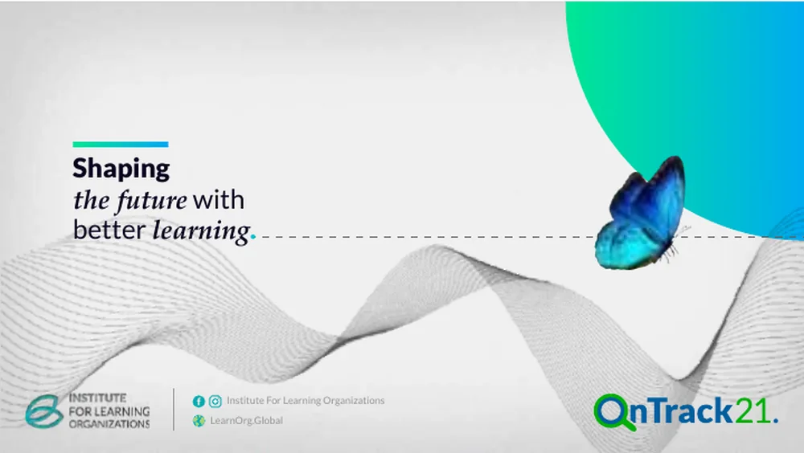
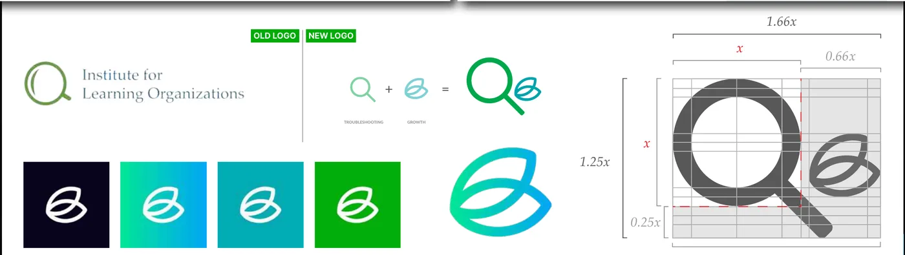
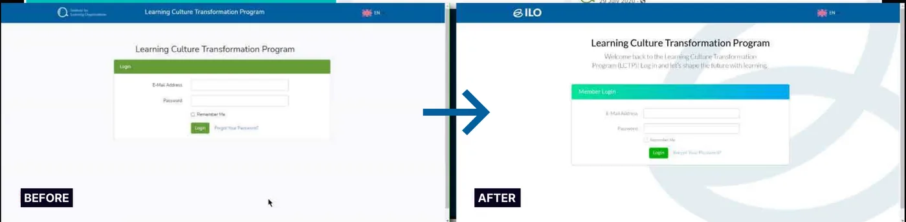
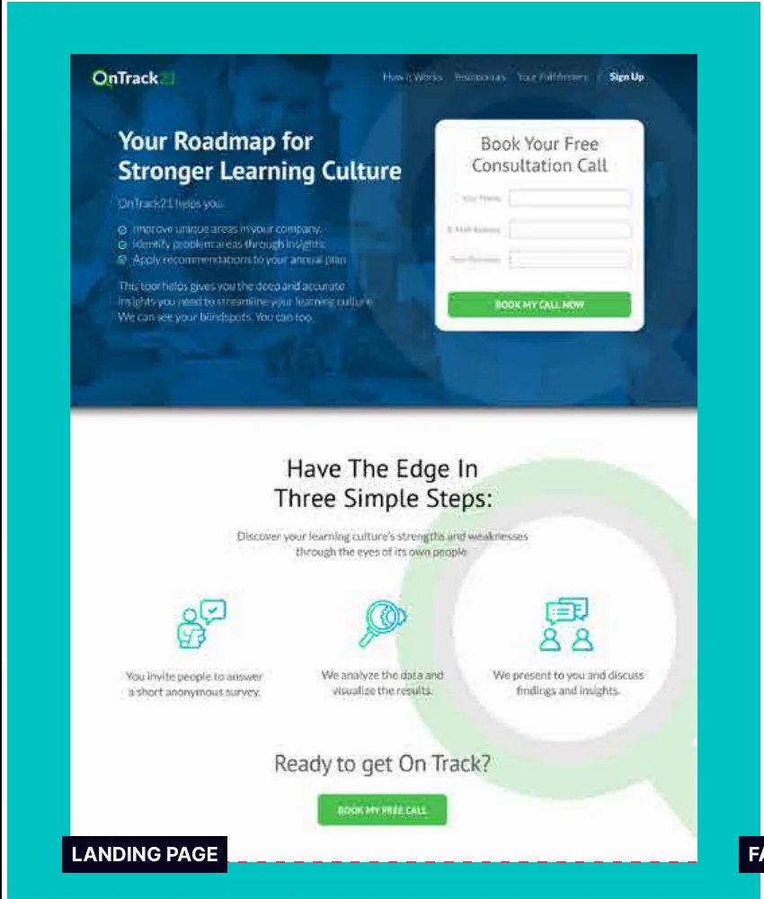
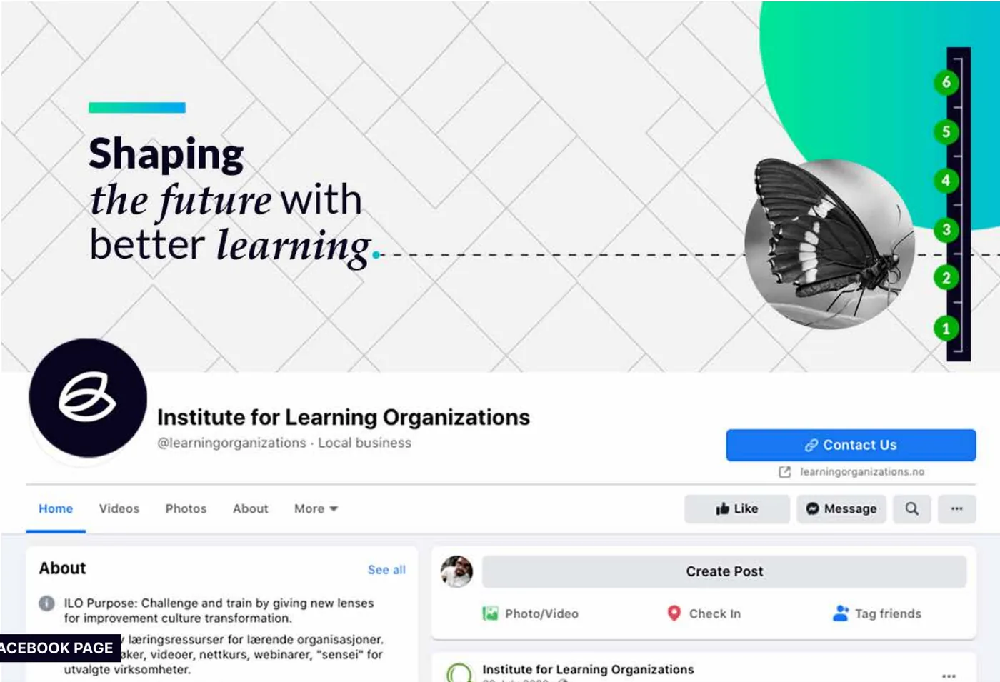
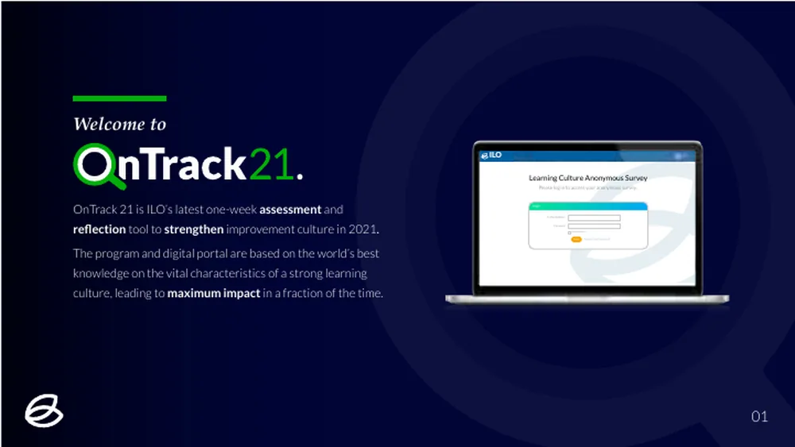
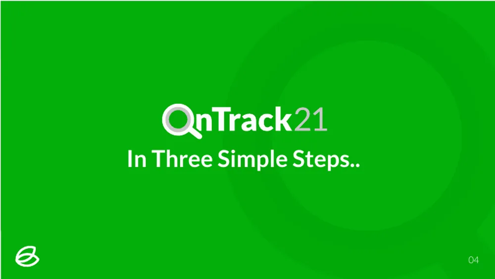
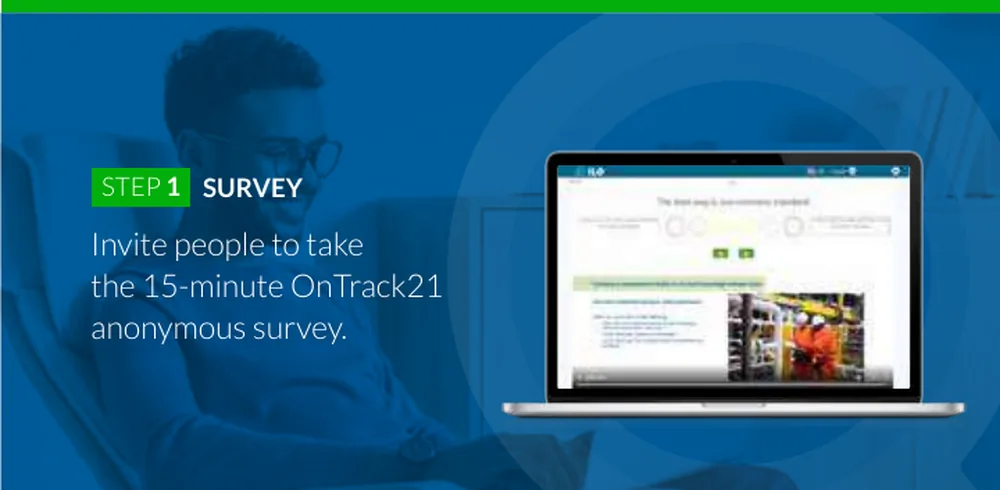
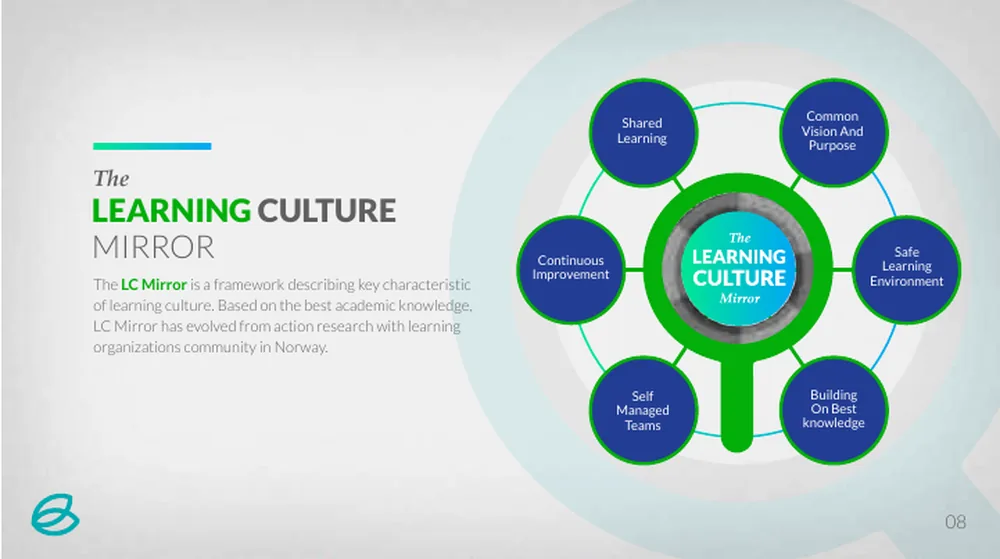
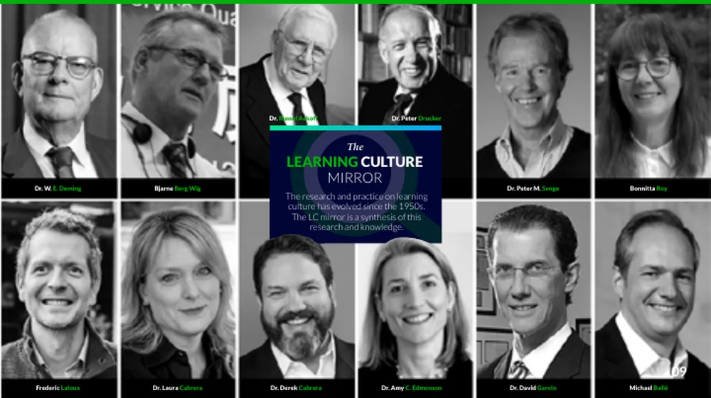

Case study · Rebrand & launch
ILO. Shaping the future with better learning.
One brand, from the company to its first tech product, OnTrack21.

The problem
A company that helps others build a better culture, with a brand that didn’t look the part.
The Institute for Learning Organizations is a European company that uses systems thinking to improve company culture. Its identity was weak, and it needed to meet the international standard of the clients it wanted and the goals it had set. On top of the rebrand, ILO was about to launch its newest tech solution, OnTrack21, which needed a brand of its own.
What I saw
Everything ILO does comes down to two moves: find what’s holding a team back, then help it grow.
So the mark became exactly that. A magnifying glass for troubleshooting, plus a leaf for growth, drawn as one shape on a strict grid. The same idea runs through the line “Shaping the future with better learning”, and through OnTrack21, whose lens is built into its name.
The decision
One system, from the company to the product. I rebranded and redefined every part of the brand and its communication around company development: the logo, the palette of navy, teal and green, the voice, and how ILO presents its products and processes.
OnTrack21 launched as a sub-brand inside that system, so a client meets the same brand on the pitch deck, the landing page, the survey portal and the Facebook page. Behind it, we built the systems for lead generation and tracked the KPIs that mattered.
What I delivered
- Brand strategy and positioning
- New logo and its construction grid
- Colour system and brand marks
- The line “Shaping the future with better learning”
- OnTrack21: sub-brand, naming treatment and launch
- The OnTrack21 landing page and consultation booking
- A redesign of the Learning Culture Transformation Program portal
- The pitch deck, including the Learning Culture Mirror framework
- The Facebook page and social presence
- Lead generation systems and KPIs
What changed
A brand that looks like the clients it wants to win.
ILO went to market with one consistent brand across the company, its program and its tool. OnTrack21 launched in 2021 as ILO’s one-week assessment and reflection tool to strengthen improvement culture: invite your people to a 15-minute anonymous survey, see the results, and act on them.
Source: the project as published in my portfolio and on Behance.









Your story could be next.
Tell me what you’re building. I reply within two working days, and the first conversation is on me.